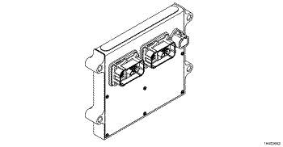
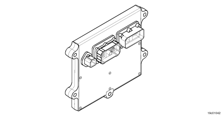

Código de Falha 2346
|
| CÓDIGO | RAZÃO | EFEITO |
| Código de Falha: 2346 PID: SPN: 2789 FMI: 0/15 LÂMPADA: Nenhuma SRT: |
Temperatura na Admissão na Turbina do Turbocompressor - Dados Válidos, mas Acima da Faixa Normal de Operação - Nível Menos Severo. A temperatura na entrada da turbina do turbocompressor excedeu o limite de proteção do motor. |
O combustível será limitado na tentativa de reduzir a temperatura calculada dos gases de escape que entram no turbocompressor. |
|
 ISL8.9 CM2150 SN - Módulo de Controle Eletrônico
|
|
 ISM11 CM876 SN - Módulo de Controle do Eletrônico
|
A temperatura dos gases de escape é calculada pelo módulo eletrônico de controle (ECM). A temperatura dos gases de escape é calculada pelo ECM com base nas condições de operação do motor, como temperatura do ar no coletor de admissão, rotação do motor, sincronização de injeção, pressão no coletor de admissão e fluxo de combustível.
O sistema não dispõe de um sensor físico de temperatura dos gases de escape. A temperatura do gás de escape é o valor calculado da temperatura do gás antes de entrar no turbocompressor e é também conhecida como a temperatura na admissão da turbina.
Nota: Alguns OEM's instalam pirômetros no chassi. Os pirômetros medem o valor da temperatura do gás de escape na saída da turbina que sai do turbocompressor que não corresponde ao valor monitorado com o parâmetro Temperatura dos Gases de Escape da ferramenta eletrônica de serviço INSITE™.
O diagnóstico é executado continuamente enquanto o motor funciona.
O ECM detecta que a temperatura calculada na entrada da turbina é maior que um valor calibrável.
O ECM apagará imediatamente a luz de verificação do motor (CHECK ENGINE) depois de o diagnóstico ser executado com êxito.
Este código de falha é um código de falha com fins informativos, indicando que o motor foi despotenciado por temperatura alta na admissão da turbina (temperatura de escape). Não é necessário fazer o diagnóstico deste código de falha. O código de falha é somente um indicador de o motor foi despotenciado para limitar a temperatura de escape.
Se a condição continuar a existir, o Código de Falha 2451 será ativado.
Consulte o diagnóstico do Código de Falha 2346.